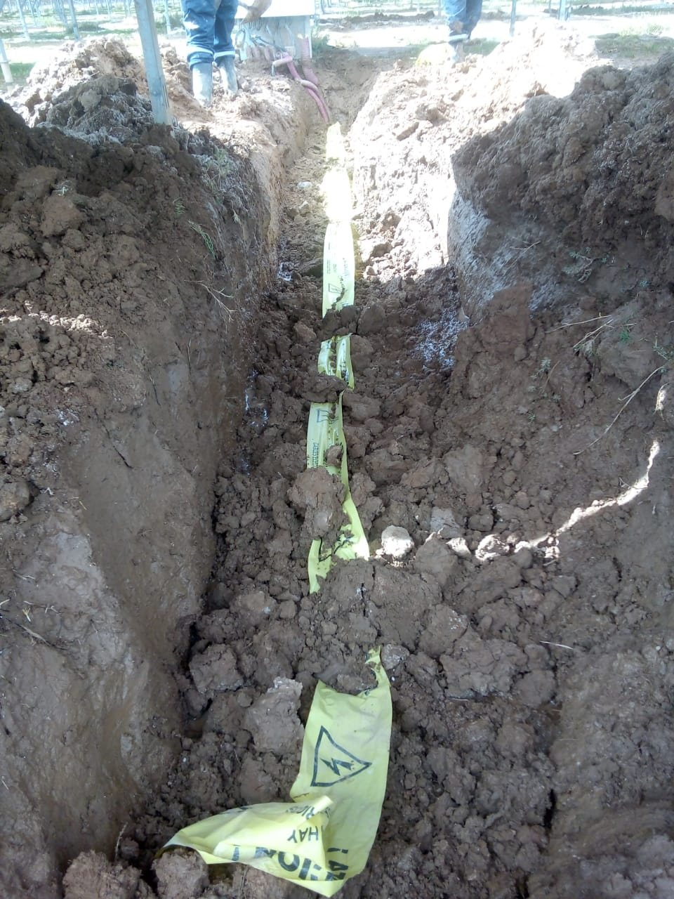
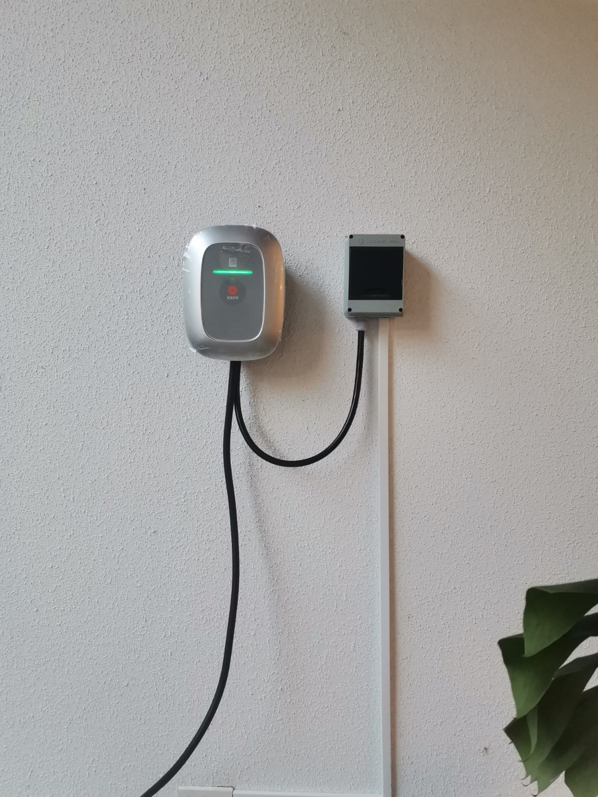
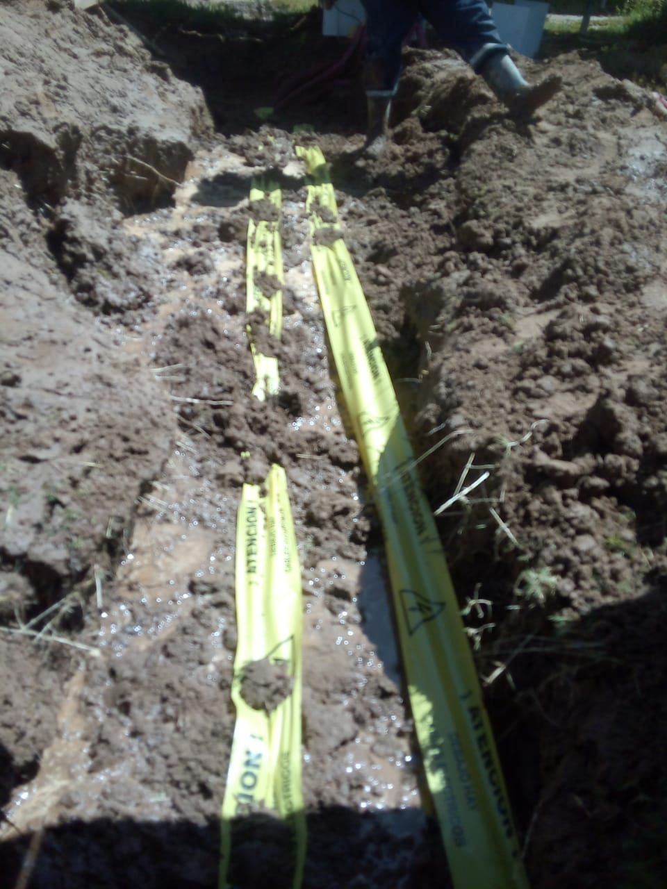
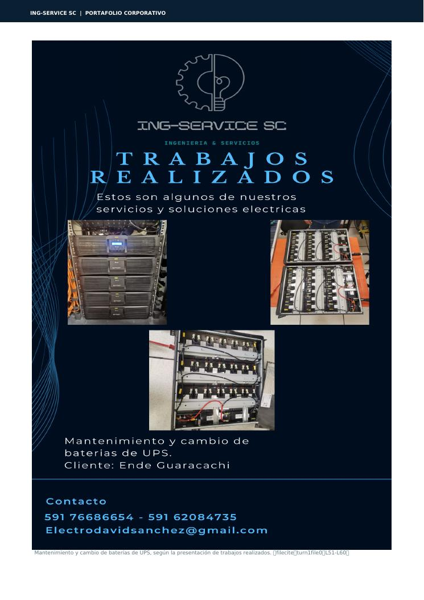
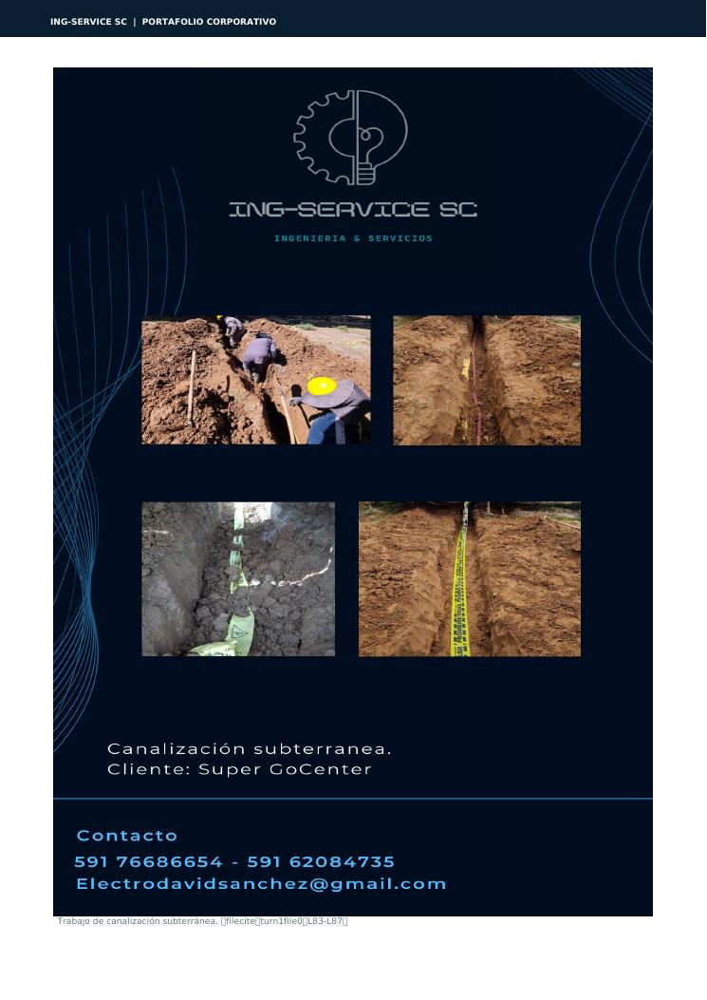

01Instalaciones eléctricas
Residenciales, comerciales e industriales: tableros, canalizaciones, cableado, acometidas, iluminación y adecuaciones.
Ver servicio →Instalamos, mantenemos y mejoramos sistemas eléctricos para hogares, empresas, industrias y proyectos de infraestructura.


Evaluamos la necesidad, definimos el alcance, ejecutamos el trabajo y verificamos el resultado. Una metodología pensada para reducir riesgos y dar claridad al cliente.

01Residenciales, comerciales e industriales: tableros, canalizaciones, cableado, acometidas, iluminación y adecuaciones.
Ver servicio →
Preventivo y correctivo, inspección, diagnóstico, termografía y mantenimiento de instalaciones y equipos.
Ver servicio →
Infraestructura de carga para vehículos eléctricos, desde la evaluación hasta las pruebas y puesta en servicio.
Ver servicio →
Sistemas fotovoltaicos On Grid y Off Grid, mantenimiento y apoyo técnico en operación y mantenimiento.
Ver servicio →Ingeniería, montaje eléctrico, tableros, automatización, canalizaciones y puesta en marcha de proyectos.
Ver servicio →Levantamiento, diagnóstico, supervisión, recomendaciones y definición de soluciones según las condiciones reales.
Solicitar visita →Una selección de imágenes incorporadas en esta nueva versión para mostrar mejor la experiencia técnica de Ing-Service SC.



Diseñamos el punto de carga considerando la condición real de la instalación eléctrica, sus protecciones, canalización, cableado y puesta en servicio.
Contratista, subcontratista especializado o proveedor de obra vendida, según el alcance y modalidad del proyecto.
Canalización, cableado, tableros, alimentadores, instalaciones y apoyo técnico por etapas de obra.
Mantenimiento, diagnóstico, termografía, adecuaciones, puesta a tierra y puesta en marcha.
Ampliaciones, iluminación, tableros, mantenimiento y adecuaciones para operación comercial.
Viviendas, condominios, oficinas y proyectos inmobiliarios, incluida infraestructura de carga EV.
Selección de trabajos documentados en el portafolio corporativo de Ing-Service SC.




Convertimos una necesidad eléctrica en un alcance claro, ejecutable y verificable.
Empresa especializada en servicios eléctricos para clientes residenciales, comerciales e industriales, con enfoque en seguridad, calidad, eficiencia y atención personalizada.
Si tu caso es diferente, escríbenos. La primera conversación sirve para entender el proyecto.
Sí. Ing-Service SC atiende instalaciones y mantenimiento residencial, además de infraestructura para cargadores de vehículos eléctricos.
Sí. La oferta contempla instalaciones, mantenimiento, montaje, canalización, cableado, tableros, diagnóstico y apoyo técnico según el alcance.
Sí. La visita permite levantar información, revisar condiciones existentes y definir un alcance técnico antes de presentar una propuesta.
Sí. El proceso contempla evaluación, circuito, protecciones, canalización, cableado, instalación, pruebas y puesta en servicio.
Sí. Puedes enviarlos por WhatsApp para que podamos entender mejor el proyecto antes de coordinar la siguiente etapa.
La web está enfocada en Santa Cruz de la Sierra, Bolivia. Para otros proyectos, consulta disponibilidad.
Puedes escribirnos directamente o dejar los datos básicos del proyecto. El formulario prepara el mensaje para WhatsApp.